Business Growth & Market Development
Getting a product to the people who buy it — routes to market, the prices that make each route work, and new lines of revenue built from capability that already existed.
-
Featured project
Brands taken from product idea to manufacture
Independent consultant · footwear and accessories
Emerging brands arrive with a product they can describe and no route to making it. I was contracted directly by brand owners to close that gap: requirements, sourcing, costed consumption, prototypes, delivery scheduling and pilot runs.
About the project
Brands taken from product idea to manufacture
Independent consultant · footwear and accessories
What the project was
Five years of independent engagements with emerging footwear and accessory brands, each one carried from an idea to a manufactured product: specification, costed consumption, supplier route, prototype, pilot run and delivery.
The challenge
Small brands fail at the join between design and selling — where an idea has to become something a factory will quote and a price can be built from. Small volumes make that harder, not easier.
My contribution
- Turned client intent into requirements and a technical specification
- Built the costed consumption sheet each brand priced from
- Ran prototyping and the corrections into a pilot run
- Coordinated sourcing, production orders and delivery to schedule
The result
Products manufactured and shipped to schedule for more than one client.
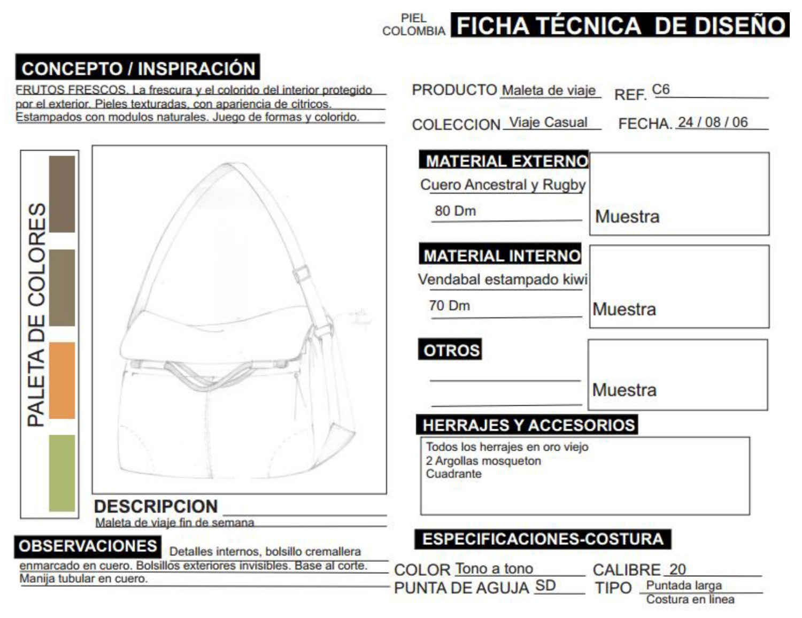
The specification a maker can build from
Product, collection, date, external and internal materials with their gauges, colour palette, fittings and stitching specification — on one sheet.
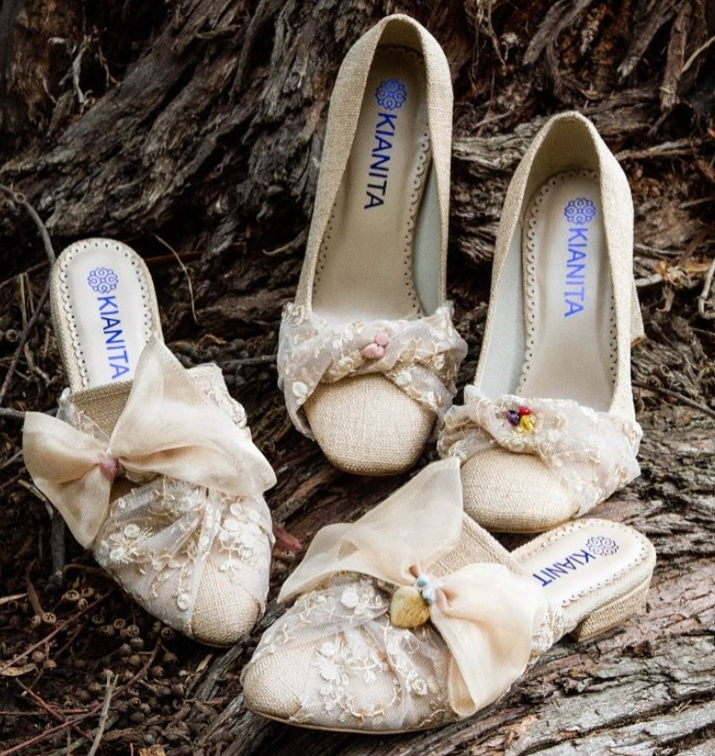
Delivered product
A finished line, photographed for sale.
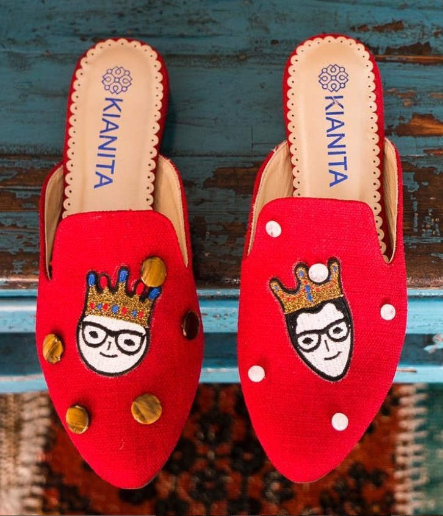
...and the line beside it
Another reference from the same client's collection.
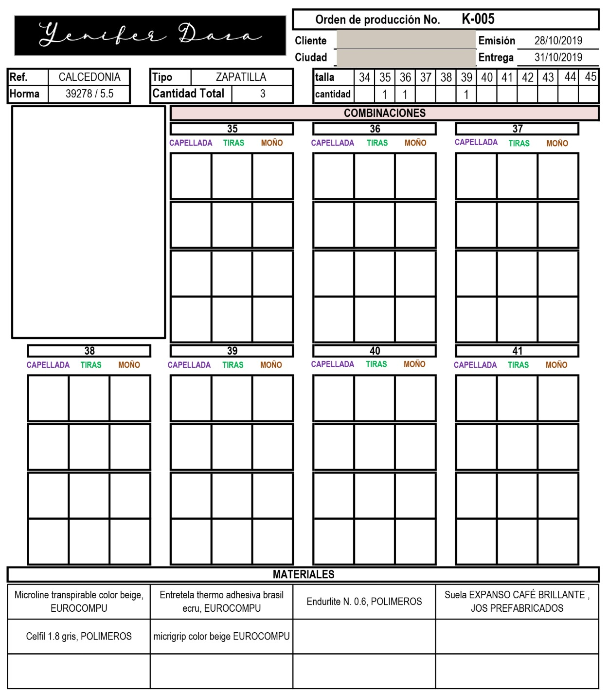
Production orders, issued and scheduled
Her own order form: reference, last, quantity, the size run and a combination grid per size, with issue and delivery dates. The client field is redacted.
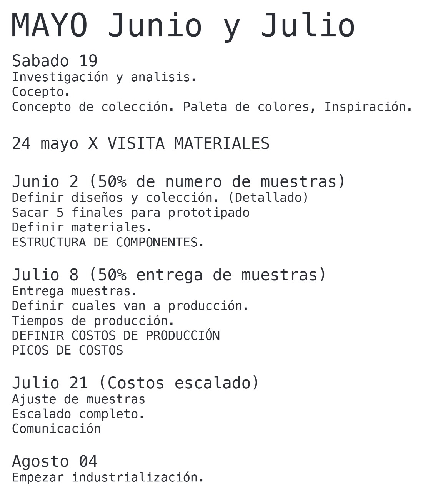
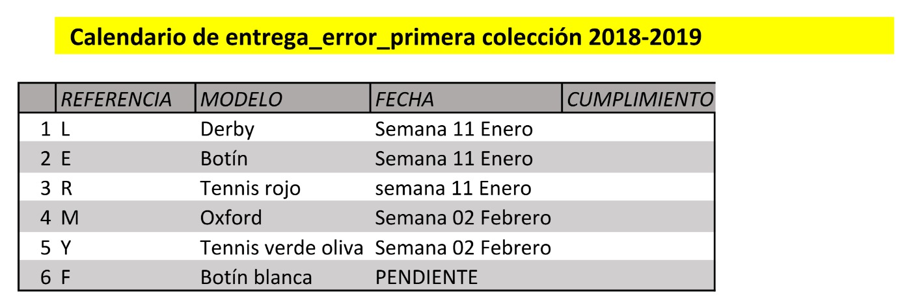
The development calendar
Research, concept and colour, a materials visit, samples at fifty per cent, sample delivery, production costing, then industrialisation — dated across four months.
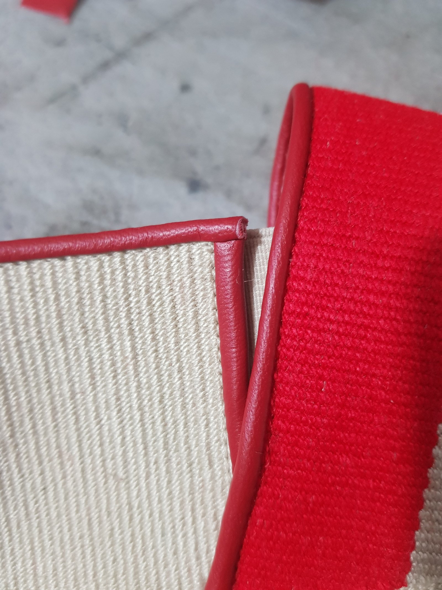
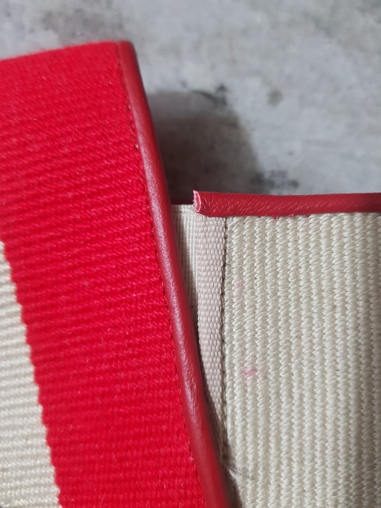
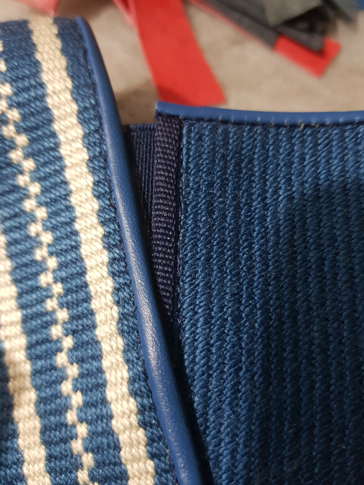
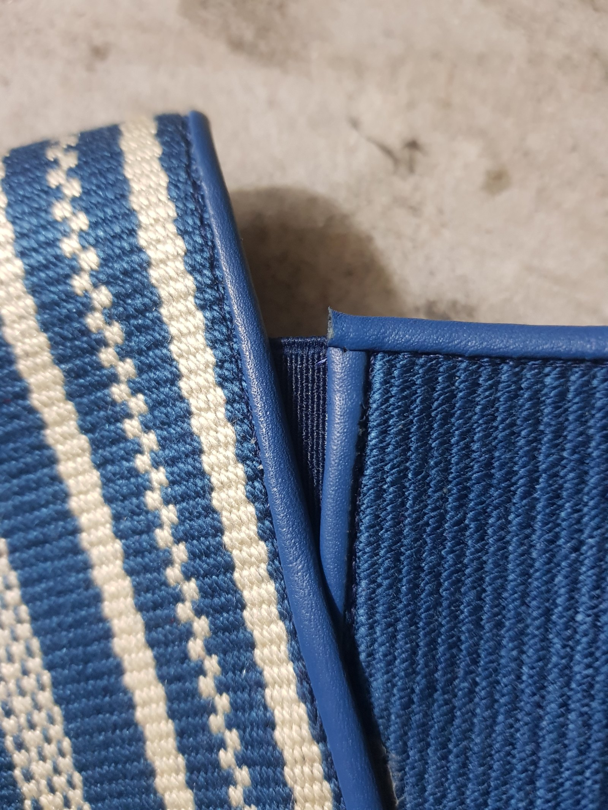
Finish, inspected close up
Binding, weave and edge finishing on delivered product.
More in this area
-
From a single sales route to several, including a B2B channel developed from scratch
Driftwood
Adding a channel is a product-information, logistics and pricing problem before it is a commercial one.
About the project
Challenge
A manufacturer selling through one route reaches exactly the buyers that route reaches — and every new route wants different information, logistics and price.
My contribution
- Developed and obtained a business-to-business distributor channel
- Coordinated channel requirements: product information, imagery and descriptions
- Built the pricing scenario behind each route, on one cost base
Result
Multiple routes to market operating in parallel. A specific 2023 campaign aimed at construction companies was run by a colleague and the commercial department.
-
Selected evidence
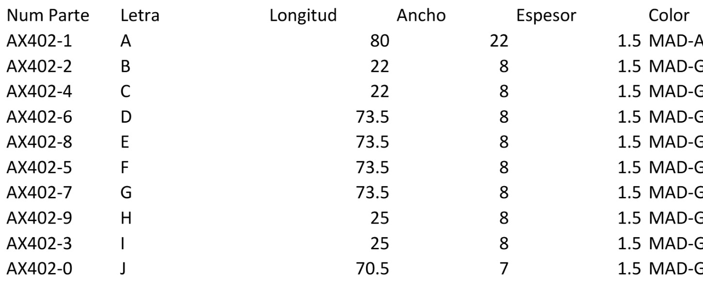
The cut list the cost was built from Part number, letter and the three dimensions for every component. 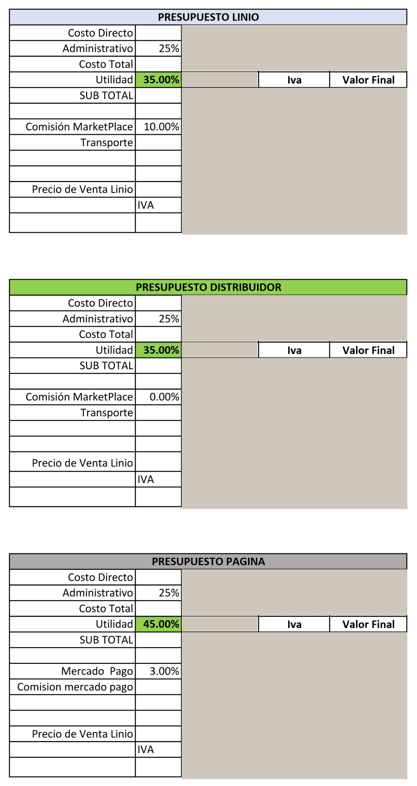
One cost, five channel prices The same cost structure repeated per route, each absorbing its own commission and transport. Currency values are withheld; the method and the percentages are not. One manufacturing cost, resolved into five channel prices
Driftwood
Growth that is not priced is not growth. This is the model every route was quoted from.
About the project
Challenge
One manufacturing cost has to resolve into several prices, each absorbing a different commission, logistics cost and tax treatment — while the cost itself depends on yield, banding, hardware and packaging.
My contribution
- Built the itemised cost model per product code, at parts level
- Built the per-channel price scenarios on that one cost base
- Maintained the models across the range and across two years
Result
A costing and pricing structure applied across the range.
-
Selected evidence
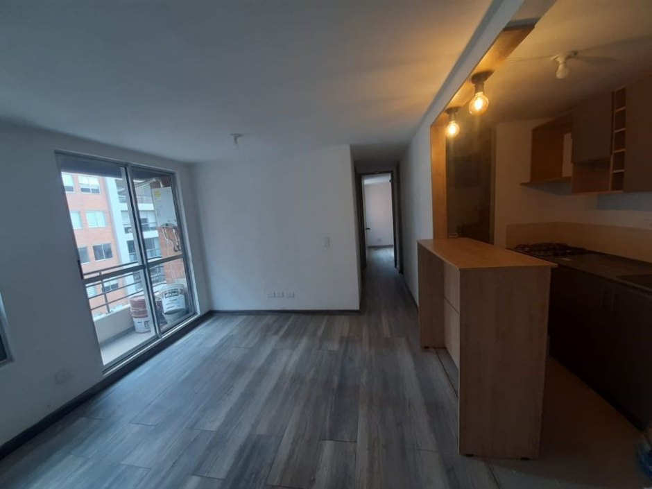
A delivered project Revenue that only exists because the service line was built to deliver it. 
Made to the measured opening Fitted kitchen joinery in a delivered unit. 
Every room in scope Bathroom joinery from the same order. 
Drawn before it was built A module modelled to the opening it had to fit. A service line is a revenue line — and I built this one
Driftwood · 38 client projects
Custom fit-out turned a stream of one-off requests into an offer the company could quote, schedule and repeat.
About the project
Challenge
The company kept being asked for work it had no repeatable way to deliver. Saying yes once is easy; saying yes thirty-eight times without losing the workshop’s rhythm is a service line.
My contribution
- Built the service line and its delivery sequence
- Coordinated suppliers, installers and site schedules per project
- Carried each project through to installed handover
Result
38 client projects delivered through a route that did not exist before.